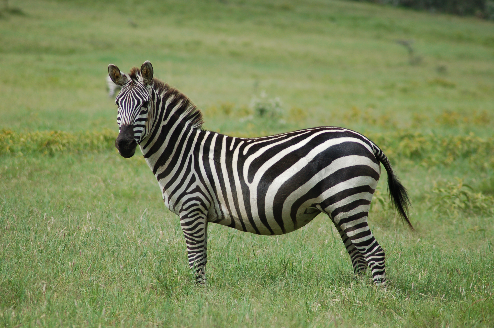
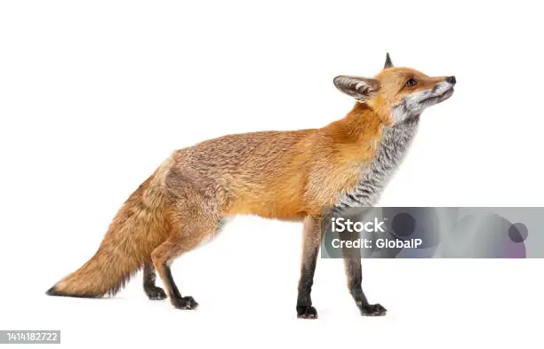

lis

cos cosgi
lis

Lis to jedno z najbardziej tajemniczych i sprytnych zwierząt w polskich lasach i na łąkach. Jest przedstawicielem rodziny psowatych i wyróżnia się charakterystycznym, rudym futrem, długim ogonem oraz spiczastymi uszami. To stworzenie o wyjątkowej zwinności i inteligencji, które potrafi skutecznie polować na małe gryzonie, ptaki czy owady, ale także nie pogardzi padliną czy owocami.